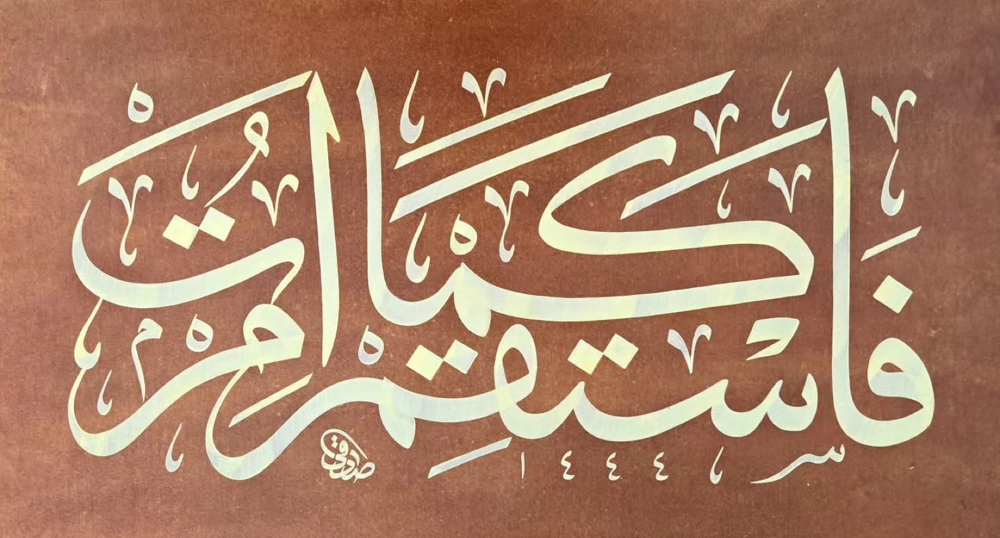

Tefsir · Son yazı
İhlâs'ın İlk Âyeti ve Üç Mertebe
"De ki: O Allah birdir." Kısa bir âyetin içinde tevhidin bütün derinliği gizlidir. Bu yazıda âyeti, ehl-i tasavvufun üç mertebe hâlinde anlattığı bilgi, görme ve oluş üzerinden okuyoruz.
Yazıyı oku →Tefsir başlıkları gerçek; Sanat ve Edebiyat yazıları ile bütün özet, tarih ve okuma süreleri taslak için yazılmış örneklerdir.